Espace formateur
Vérification de vos droits…
Inscriptions
Projets remis
Enregistrer une évaluation
Vérifiez la remise et la soutenance avant de saisir les notes. Le certificat est délivré uniquement lorsque les deux seuils et le total sont atteints.

Vérification de vos droits…
Vérifiez la remise et la soutenance avant de saisir les notes. Le certificat est délivré uniquement lorsque les deux seuils et le total sont atteints.